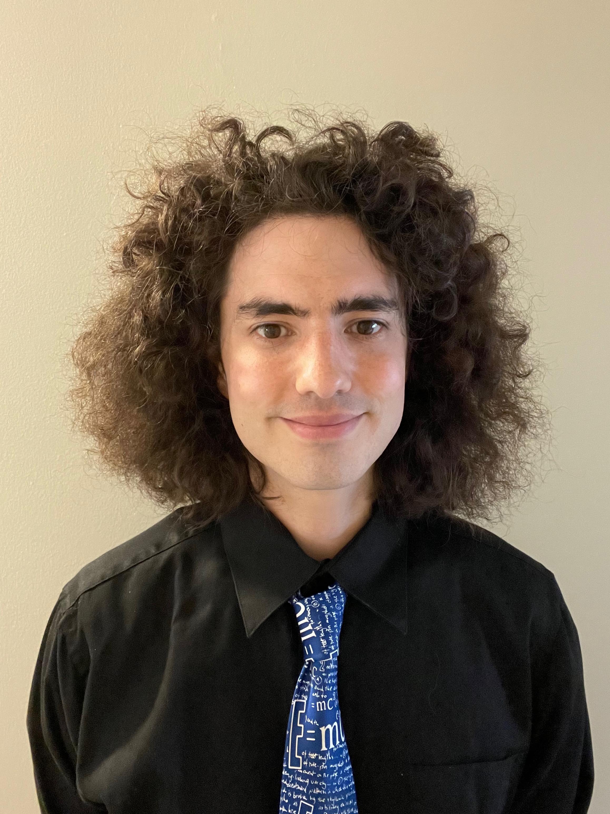

I am currently looking for AAVSO observers who might be interested in getting involved in my research on classical novae. All levels of research involvement are welcome, ranging from data collection (I really appreciate the tremendous AAVSO and ARAS databases), to analysis of your own data (or other people's data), right through the writing of the paper. Interested observers that make substantial contributions will be welcomed as co-authors on any papers to come out of these projects.
Received my first JWST MIRI observations for a nova remnant, looking forward to taking a look and seeing what we've found!
As of September First, I've officially started work as a NSF Astronomy and Astrophysics Fellow! I'm hosted at Michigan State University (MSU), and plan to work on large-scale statistical studies of novae using the nova population detected by LSST and other surveys. I'm also planning to work with citizen scientists to coordinate observations of the brighter sample of newly-detected novae.
My name is Dr. Peter Craig, and I'm a NSF Astronomy and Astrophysics Fellow (AAPF) at Michigan State University (MSU) working with Professor Laura Chomiuk. My research focuses on multi-wavelength observations of classical novae, especially with a focus on using archival data to build statistics across many recent Galactic novae. I am quite interested in understanding the mechanisms behind mass ejection during nova eruptions, especially in relation to the properties of internal shocks that form inside the nova ejecta. These shocks are thought to be responsible for the emission of γ-rays and the formation of dust within novae. In general, however, the details of the shocks and mass ejection mechanisms and geometry are not very well understood, so there remains a lot to be learned here.
Recently, we released a paper that measured the distribution of the optical colors of Galactic novae across eruptions between 2008 and 2022. This is an update on a classic result that nova colors are relatively consistent between eruptions, which has considerable utility for estimating reddenings. Our work finds that this is generally true, and that the colors are especially consistent at t2, when the nova has declined by 2 magnitudes. More recently, I led a paper that studies the γ-ray properties of the same sample of Galactic novae, especially studying how the γ-ray properties of novae relate to their optical properties, to study the γ-ray producing shocks. We compare the γ-ray properties to the ejecta velocities measured in the optical spectra, as well as features of the optical light curves like the formation of dust. This paper has been accepted for publication in MNRAS, and can be found here.
If you're interested in learning more about my research, check out my research page, which goes into a bit more depth (and includes some side projects and older work as well). Alternatively, if you'd like to see the papers directly, here is a NASA ADS Library page that lists my publications. If you'd like to get in touch, my contact information is at the bottom of this page and on the contact page. Or you could see my CV here or on the about me page. If you have any questions, feel free to reach out!
Contact Information: